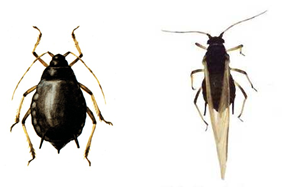

| Home |
| PULSES |
| 1. Bean Aphid |
| 2. Thrips |
| 3. Whitefly |
| 4. Green Leafhopper |
| 5. Pod Bug |
| 6. Lab-lab bugs / Stink bug |
| 7. leaf webber |
| 8. lab-lab leaf miner |
| 9. termites |
| questions |
| download notes |
PESTS OF PULSES :: Major Pests :: Bean Aphid
1. Bean aphid: Aphis craccivora (Aphididae: Hemiptera)
Distribution and status: Cosmopolitan, India, Africa, Argentina, China, U.S.A., Europe, Australia |
 |
Bionomics: It is a greenish black coloured aphid. The total life cycle occupies an average of 3-8 days. It reproduces parthenogenetically and viviparously. The female may produce 8-30 young ones in a life span of 10-12 days. The nymphs transform into adult in 5-8 days after passing through four instars.
Management
|